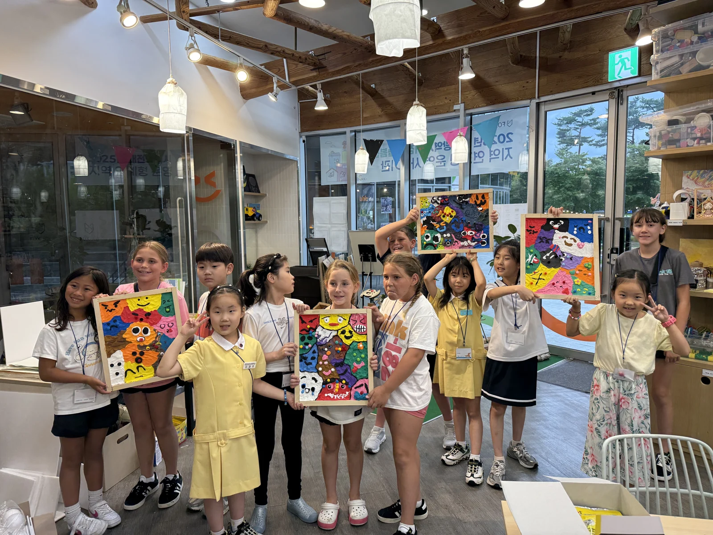
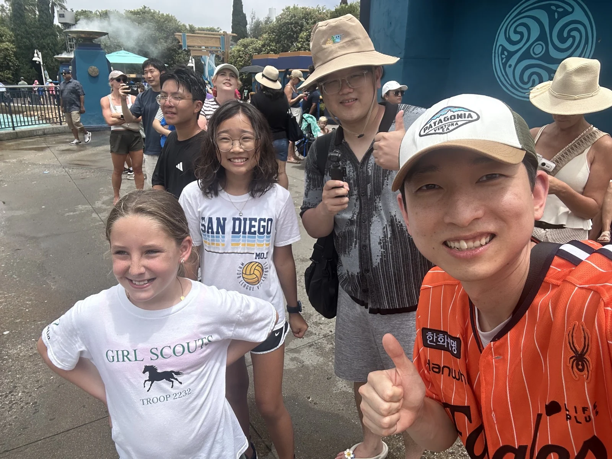

영어로 나를 표현하고,
친구를 알아갑니다.
자신과 친구의 감정·생각을 이해하는 사회정서학습(SEL)을 바탕으로, 영어로 대화하고 함께 활동합니다.
- 영어로 생각 전하기
- 자신을 소개하고, 궁금한 점과 의견을 영어로 표현해 봅니다.
- 친구와 함께하기
- 친구의 생각과 감정을 듣고, 내 의견도 나누며 함께하는 방법을 배웁니다.
- 경험 돌아보기
- 하루의 경험과 느낌을 글과 그림으로 정리하며, 무엇을 배웠는지 돌아봅니다.
2025 한국 · 폭스러닝센터 · 감정클레이 활동

한국과 미국에서
만나는 친구들.
미국에서 만난 친구와 가족
스톤랜치 초등학교에서 미국 학생들과 한 모둠이 되어 코딩 과제를 함께 완성했습니다.
캠프에 참여한 미국 학생 가족의 초대로 집을 방문해 함께 시간을 보냈습니다.
배경 사진 · 2024 한국 · 폭스러닝센터 학생 교류


캠프에서의 배움.
함께 정한 일정, 하루의 기록
정해진 조건 안에서 팀별로 갈 곳을 정하고 역할을 나눴습니다. 캠프 중과 종료 후에 경험을 정리하고, 활동 결과와 앞으로 실천할 목표를 나눴습니다.
2025 학생 활동과 기록 보기 ↗대학 생활과 전공 탐색
대학생과 대학 생활·전공 선택 이야기를 나눴습니다. 어떤 사람이 되고 싶은지 생각하며 진로카드를 작성했습니다.
배경 사진 · 2025 미국 · 어바인 · 포트폴리오 작성


지난 캠프와
참여 안내.
미국 캠프에서는 연구원이 같은 숙소에 머무르며 모든 일정에 동행하고, 24시간 아이들의 캠프 생활을 돌봅니다.
2026 미국 · 샌디에이고 · 미국 학생들과 함께한 시간